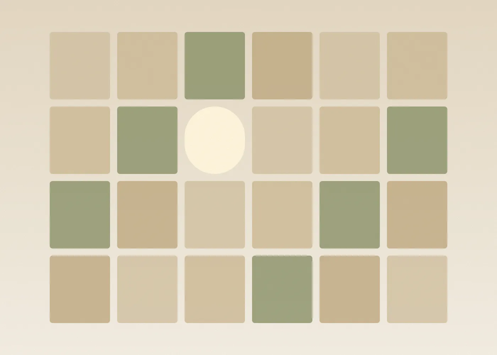

06 · Especialidade
Clínica geral
A clínica geral é a porta de entrada. É onde acontecem a primeira avaliação, a prevenção, as restaurações e a coordenação entre as especialidades.

Consultas regulares permitem encontrar problemas cedo, quando o tratamento costuma ser mais simples. Limpeza, controle de cáries e de doenças da gengiva fazem parte da rotina.
Quando uma situação pede um especialista, a indicação vem acompanhada da explicação do motivo, e o plano continua sendo conduzido de forma integrada.
Conteúdo informativo e demonstrativo. Não substitui avaliação profissional nem garante resultado.
Como costuma ser o caminho
- 1
Acolhimento
Conversa sobre histórico, queixas e hábitos.
- 2
Exame
Avaliação de dentes, gengivas e mordida.
- 3
Plano de cuidado
Prioridades definidas com você, em ordem e com custos explicados.
- 4
Retornos
Revisões em intervalos definidos pela sua necessidade.
Para levar à primeira consulta
- O que precisa ser tratado primeiro?
- De quanto em quanto tempo devo voltar?
- Há algo que eu possa fazer em casa para melhorar a prevenção?
Perguntas frequentes
O intervalo depende de cada pessoa. O profissional define a frequência ideal depois da avaliação.
Sim. A avaliação acompanha a limpeza, para verificar se há algo que precise de atenção.